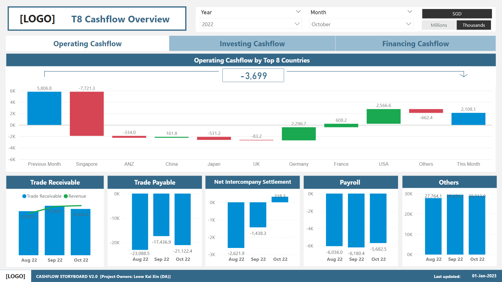

cashflow Details
The CashFlow Storyboard displays the net amount of cash and cash-equivalents bring transferred into and out of a business. It comes in 3 forms: Operating,
Investing and Financing. The user is able to analyse how well the company is able to manage its cash position, to generate cash to pay its debt
obligations and fund its operating expenses. The Storyboard consists of 5 dashboards:
1. Cash by Countries
2. Top 8 CashFlow Overview
3. CashFlow Overview
4. CashFlow Movement
5. CashFlow Movement Details
The first dashboard is the Cash by Countries Dashboard. The dashboard showcases the Group Cash and Fixed Deposits Trend for Top 6 countries and their forcast values.

The second dashboard is the T8 CashFlow Overview Dashboard. The dashboard highlight the porportion that each of the top 8 countries and other contribute to the change in cash.
The third dashboard is the CashFlow Overview Dashboard. The dashboard highlights the key metric (Free cashflow and operating cashflow ratio) as well as
overarching view of the cashflow activities.
Free cashflow is the amount of cash a business has after meeting its financial obligations (i.e. paying for operations, interest, etc). This is an important metric
to our investors or the bank, as it reflects the health of the company. A high cash flow will then be able to indicate to the investor or the bank that the
organisation has enough cash to expand, and hence aid in money borrowing from the bank.
Operating Cashflow Ratio is the measure of how well a company can pay off its current liabilities with the cash flow generated from its core business operations
(Operating Cash). The management will be able to have a view of the liquity of the company. High cash flow ratio would indicate that the company is able to generate
enough cash to pay off its liabilities; Low cash flow ratio would be able to give off the signal to the management and investors that the company needs more cash.

The fourth dashboard is the Cash Movement Dashboard. This dashboard highlights the flowchart of how P&L statment is linked to the organisation position.

The last dashboard is the CashFlow Movement Details Dashboard. This dashboard highlights 5 main accounts that contribute to the Operating Cashfow (Trade Receivable, Trade Payable, Net Intercompany Settlement, Payroll and Others)